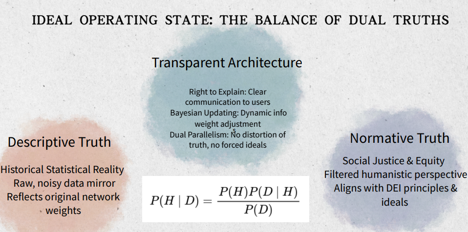

IDEAL OPERATING STATE: THE BALANCE OF DUAL TRUTHS
Descriptive Truth
It reflects statistical reality, acknowledging the presence of bias in data and models. It is the "is" of the world, where we recognize the imperfections and biases that exist.
Transparent Architecture
AI should have the 'Right to Explain,' showing users both the data reality and the ethical path forward.By applying Bayesian updating, we balance what the world is with what it should be dynamically, allowing for continuous learning and adaptation in the pursuit of social equity.
Normative Truth
For Social Justice & Equity,
In filtered humanistic perspective, to align the model with DEI, Prolitical
correctness.
